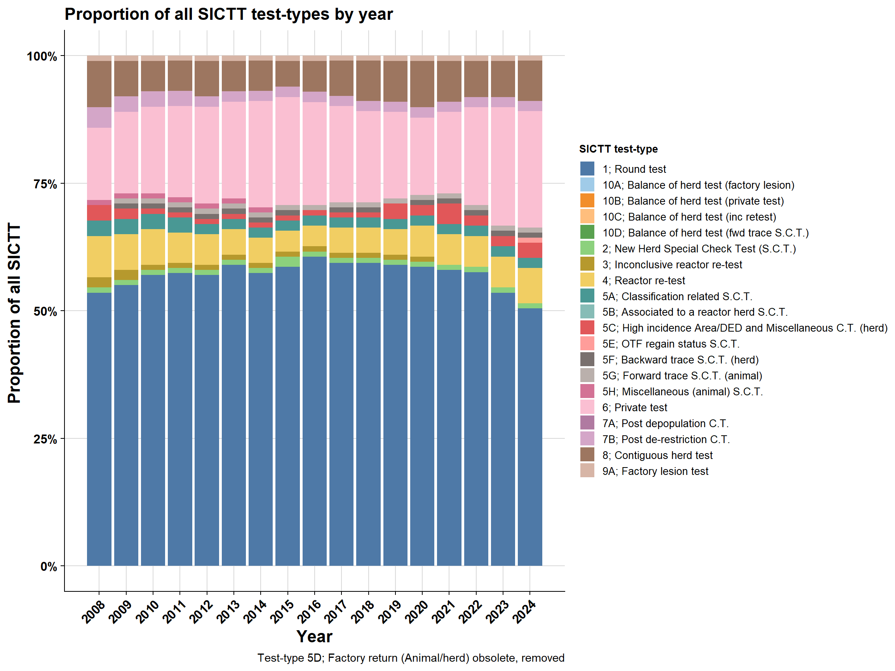
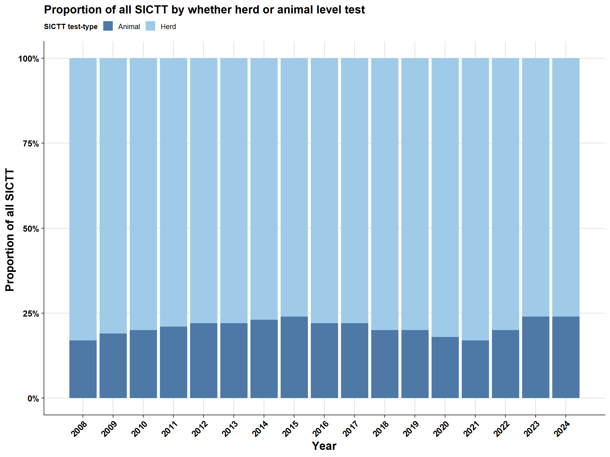
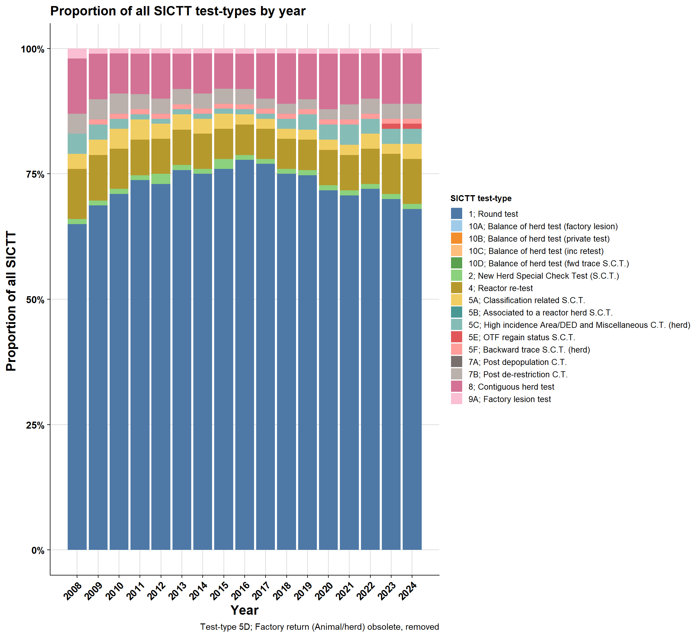
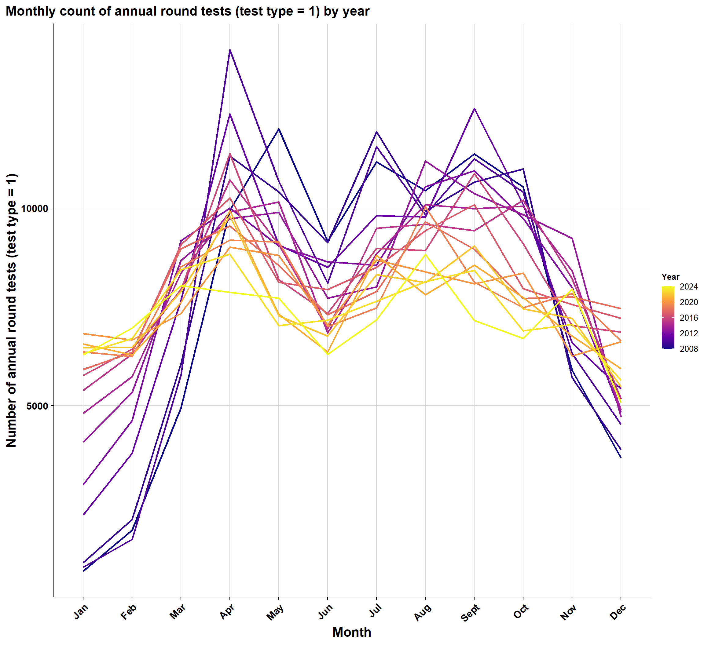
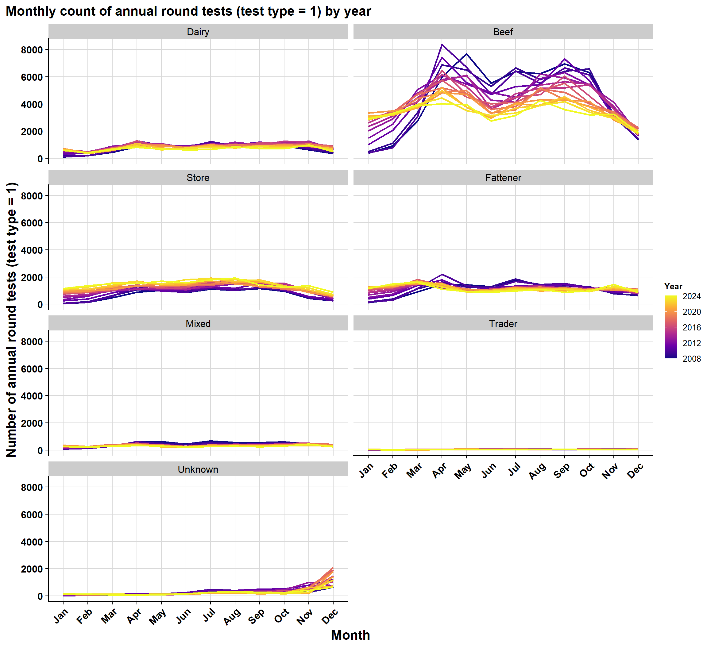
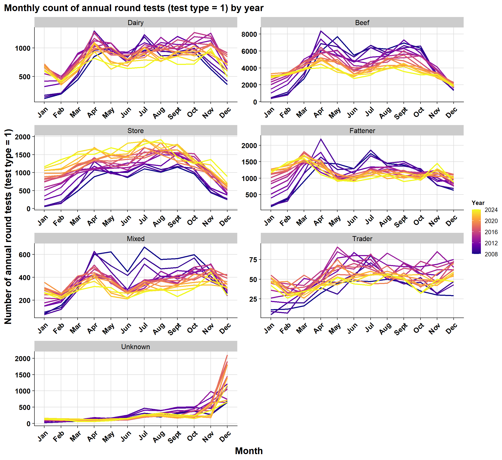
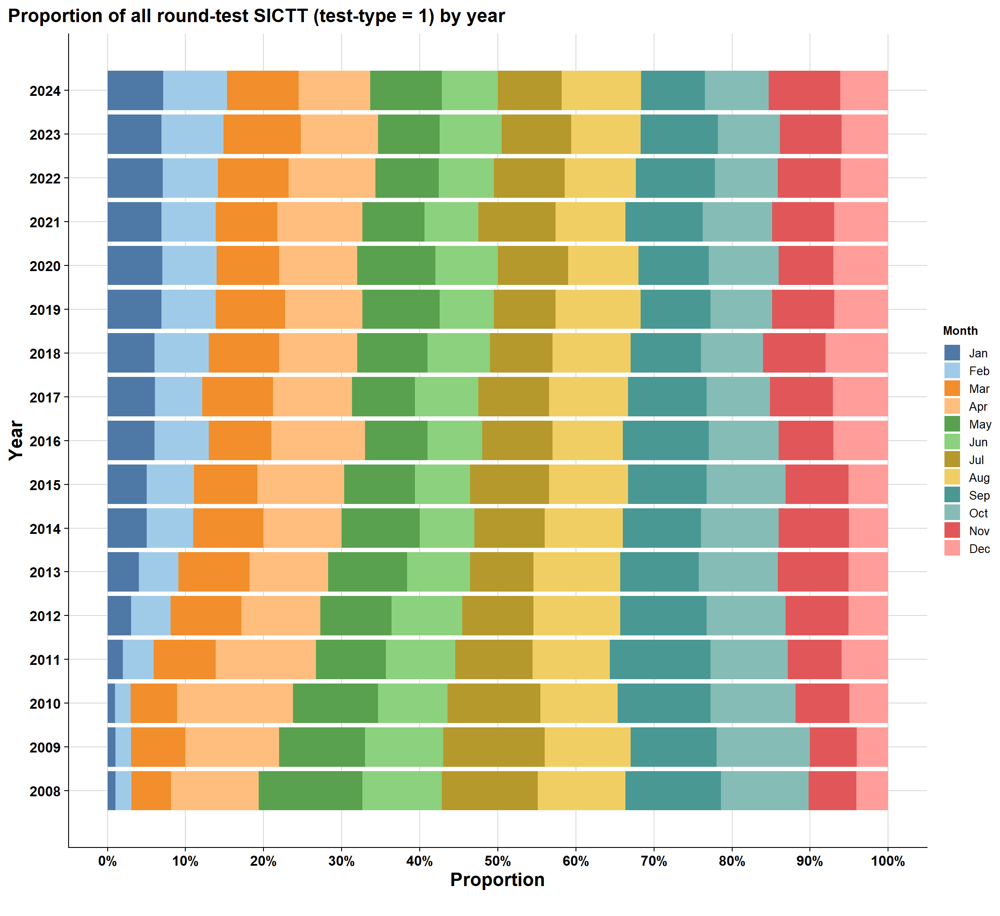
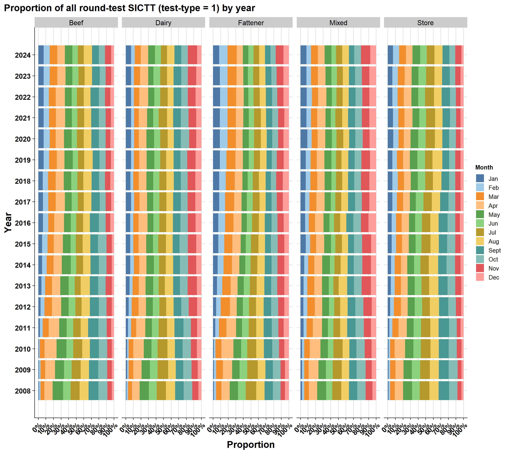
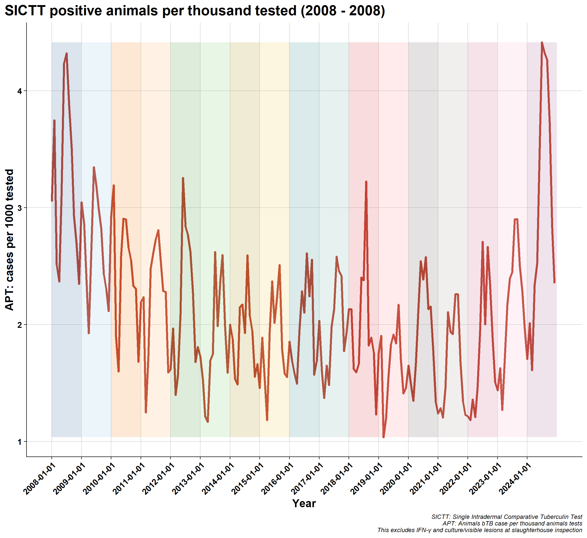
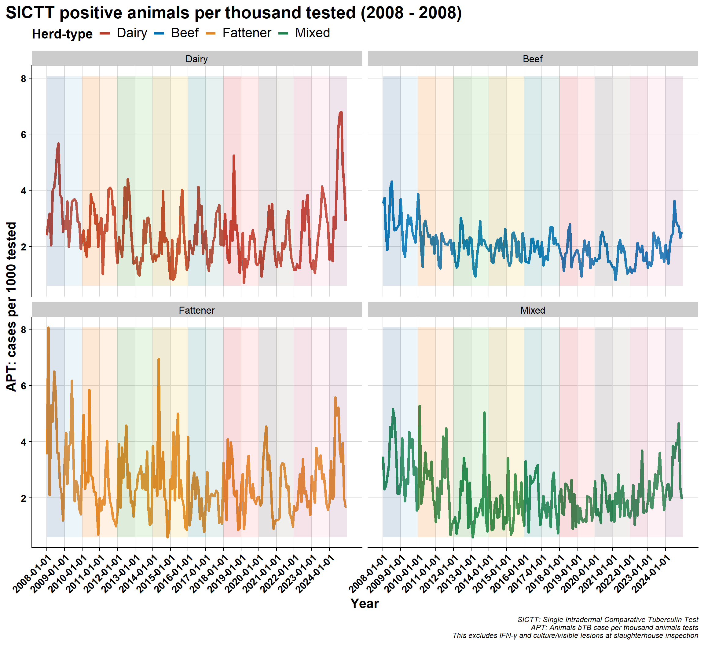

10 SICTT test-types
\(~\) \(~\)
10.1 All test-types (herd and animal-level SICTTs)
\(~\) \(~\)
10.1.1 Herd vs animal level test-types
Many SICTT are just animal-level tests and are not associated with a full herd test (e.g., a pre-movement test). We assigned each test-type to a herd or animal level test:
Herd | Animal |
|---|---|
1; Round test | 3; Inconclusive reactor re-test |
2; New Herd Special Check Test (S.C.T.) | 5D; Factory return (Animal/herd) obsolete |
4; Reactor re-test | 5G; Forward trace S.C.T. (animal) |
5A; Classification related S.C.T. | 5H; Miscellaneous (animal) S.C.T. |
5B; Associated to a reactor herd S.C.T. | 6; Private test |
5C; High incidence Area/DED and Miscellaneous C.T. (herd) | |
5E; OTF regain status S.C.T. | |
5F; Backward trace S.C.T. (herd) | |
7A; Post depopulation C.T. | |
7B; Post de-restriction C.T. | |
8; Contiguous herd test | |
9A; Factory lesion test | |
10A; Balance of herd test (factory lesion) | |
10B; Balance of herd test (private test) | |
10C; Balance of herd test (inc retest) | |
10D; Balance of herd test (fwd trace S.C.T.) |
\(~\) \(~\)

\(~\) \(~\)
repeat above plots by herd-level only SICTTs (increase in animal level tests skewing true )
10.1.2 All test-types (herd-level SICTT only)

And table format:
Test type | 2008 | 2009 | 2010 | 2011 | 2012 | 2013 | 2014 | 2015 | 2016 | 2017 | 2018 | 2019 | 2020 | 2021 | 2022 | 2023 | 2024 |
|---|---|---|---|---|---|---|---|---|---|---|---|---|---|---|---|---|---|
10A; Balance of herd test (factory lesion) | 0.0 | 0.0 | 0.0 | 0.0 | 0.0 | 0.0 | 0.1 | 0.1 | 0.1 | 0.1 | 0.1 | 0.1 | 0.1 | 0.1 | 0.1 | 0.1 | 0.0 |
10B; Balance of herd test (private test) | 0.0 | 0.0 | 0.0 | 0.0 | 0.0 | 0.0 | 0.0 | 0.0 | 0.0 | 0.0 | 0.0 | 0.0 | 0.0 | 0.0 | 0.0 | 0.0 | 0.0 |
10C; Balance of herd test (inc retest) | 0.1 | 0.1 | 0.1 | 0.1 | 0.0 | 0.0 | 0.0 | 0.1 | 0.1 | 0.0 | 0.0 | 0.1 | 0.0 | 0.0 | 0.0 | 0.0 | 0.0 |
10D; Balance of herd test (fwd trace S.C.T.) | 0.0 | 0.0 | 0.0 | 0.0 | 0.0 | 0.0 | 0.0 | 0.0 | 0.0 | 0.0 | 0.0 | 0.0 | 0.0 | 0.0 | 0.0 | 0.0 | 0.0 |
1; Round test | 64.6 | 67.7 | 70.8 | 72.9 | 73.1 | 75.3 | 75.4 | 76.3 | 77.2 | 76.5 | 74.8 | 73.6 | 71.3 | 69.6 | 71.9 | 70.3 | 67.6 |
2; New Herd Special Check Test (S.C.T.) | 0.9 | 1.1 | 1.0 | 1.3 | 1.6 | 1.4 | 1.2 | 2.0 | 1.5 | 1.3 | 1.1 | 0.9 | 1.2 | 1.5 | 1.0 | 1.0 | 0.8 |
4; Reactor re-test | 10.2 | 9.1 | 8.2 | 7.4 | 7.2 | 6.7 | 6.6 | 5.9 | 5.7 | 5.8 | 6.0 | 6.2 | 7.2 | 7.3 | 7.3 | 8.0 | 9.5 |
5A; Classification related S.C.T. | 3.2 | 3.3 | 3.7 | 3.5 | 3.1 | 2.9 | 2.7 | 2.7 | 2.4 | 2.2 | 1.9 | 2.2 | 2.0 | 2.3 | 2.7 | 2.4 | 2.6 |
5B; Associated to a reactor herd S.C.T. | 0.1 | 0.0 | 0.0 | 0.0 | 0.0 | 0.0 | 0.0 | 0.0 | 0.0 | 0.0 | 0.0 | 0.0 | 0.0 | 0.0 | 0.0 | 0.0 | 0.0 |
5C; High incidence Area/DED and Miscellaneous C.T. (herd) | 3.6 | 3.0 | 1.8 | 1.2 | 1.0 | 0.8 | 0.9 | 1.1 | 1.3 | 0.9 | 1.6 | 3.4 | 3.0 | 4.3 | 3.0 | 3.1 | 3.3 |
5E; OTF regain status S.C.T. | 0.3 | 0.3 | 0.3 | 0.3 | 0.3 | 0.4 | 0.4 | 0.3 | 0.3 | 0.3 | 0.3 | 0.3 | 0.4 | 0.4 | 0.5 | 0.6 | 0.8 |
5F; Backward trace S.C.T. (herd) | 0.2 | 0.8 | 0.9 | 0.9 | 0.8 | 0.8 | 0.7 | 0.7 | 0.6 | 0.7 | 0.7 | 0.6 | 0.8 | 0.9 | 1.0 | 1.2 | 1.3 |
7A; Post depopulation C.T. | 0.0 | 0.0 | 0.0 | 0.0 | 0.0 | 0.0 | 0.0 | 0.0 | 0.0 | 0.0 | 0.0 | 0.0 | 0.0 | 0.0 | 0.0 | 0.0 | 0.0 |
7B; Post de-restriction C.T. | 4.3 | 4.3 | 3.7 | 3.5 | 3.1 | 3.1 | 2.9 | 2.8 | 2.6 | 2.0 | 2.1 | 2.2 | 2.3 | 2.7 | 2.7 | 2.5 | 2.8 |
8; Contiguous herd test | 10.9 | 8.9 | 8.1 | 7.8 | 8.5 | 7.4 | 8.0 | 7.1 | 7.4 | 9.1 | 10.3 | 9.5 | 10.6 | 9.9 | 8.7 | 9.5 | 10.0 |
9A; Factory lesion test | 1.5 | 1.3 | 1.3 | 1.1 | 1.0 | 1.0 | 0.9 | 0.8 | 0.8 | 0.8 | 0.9 | 0.8 | 1.0 | 1.0 | 1.1 | 1.2 | 1.2 |
10.2 Timing of round test-type
Seasonality of annual round test (test_type = 1)
Is there more annual round test during certain months of the year (e.g., summer/autumn) which might reflect more cases being detected?
Simple count and proportion is plotted below.
10.2.1 All herds count

10.2.2 Count by herd-type


10.2.3 All herds proportion

10.2.4 by herd-type

10.3 APT (Animals Reactor per Thousand Animal Tests)
SICTT positive animals per thousand tested
APT is used by DAFM as an administrative metric (which just looks at SICTT)

10.3.1 APT by herd
